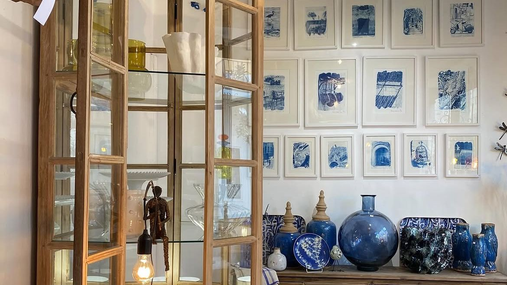
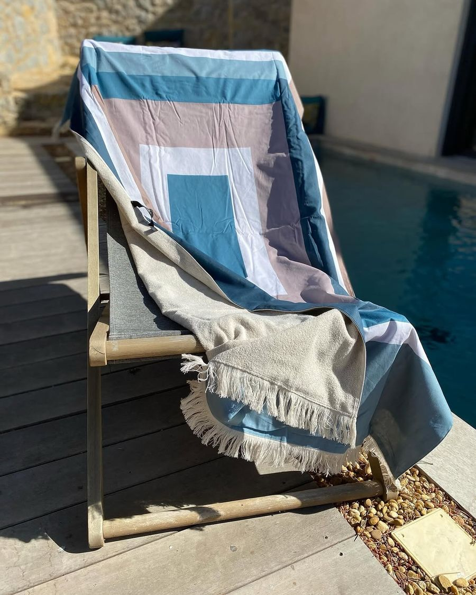
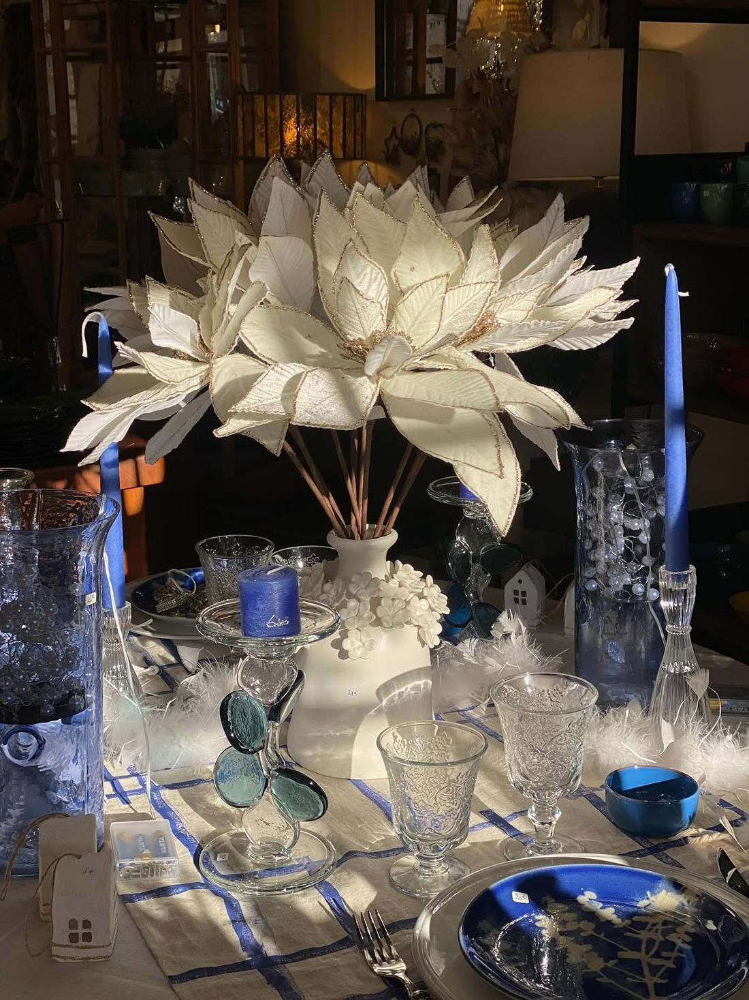
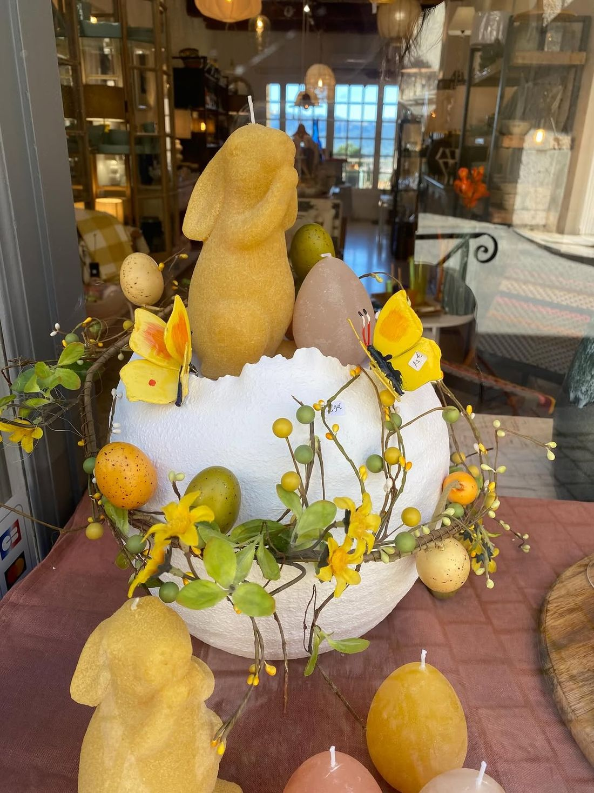

Ambiance I
Arts de la table
Verres soufflés, grès, linge brut et bouquets de saison. Des tables pour recevoir sans façon, et pour que chaque repas ait un air de fête.
Explorer la sélection
Boutique de décoration · La Cadière-d'Azur
En ce moment en boutique
Manifeste
Déco Sud est une maison plus qu'une boutique. On y entre pour un vase, on y reste pour la lumière, les couleurs et les histoires des objets. Lucie réunit des maisons qu'elle admire et les mains d'artisans d'ici, et elle aime « raccompagner ses clients comme s'ils avaient passé l'après-midi à la maison ».
Lucie Crouzel, curatrice
Une table que l'on dresse pour recevoir, une lampe qui adoucit le soir, un bleu qui rappelle la mer. À chaque saison, la boutique change de costume.


Dans la boutique
Ambiance I
Verres soufflés, grès, linge brut et bouquets de saison. Des tables pour recevoir sans façon, et pour que chaque repas ait un air de fête.
Explorer la sélection
Ambiance II
Le verre qui accroche le soleil, le bois patiné, la céramique mate. Des luminaires et des objets qui changent selon l'heure du jour.
Explorer la sélection
Ambiance III
Jaune mimosa, bleu Méditerranée, terre cuite. Oser la couleur, par touches ou franchement, comme on ouvre les volets un matin de printemps.
Explorer la sélectionConseils de la boutique
Les petits secrets de Lucie pour faire entrer le Sud chez vous : dresser une table, marier les matières, oser une couleur.


Nous rendre visite
Horaires
8 rue Gabriel Péri
83740 La Cadière-d'Azur
Suivez la vie de la boutique au jour le jour : découvrez les nouvelles pièces dès leur arrivée, trouvez des idées pour vos intérieurs et posez-nous directement vos questions.